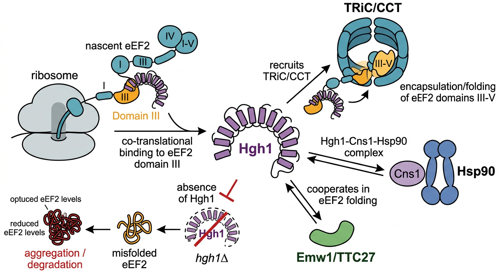

Deep Research
Falcon
(hgh1-deep-research-falcon.md)
Falcon
(hgh1-deep-research-falcon.md) Artifact IDs that](hgh1-deep-research-falcon_artifacts/image-1.png){kind=link}
The research report should be a detailed narrative explaining the function, biological processes, and localization of the gene product. Citations should be given for all claims.
You should prioritize authoritative reviews and primary scientific literature when conducting research. You can supplement
this with annotations you find in gene/protein databases, but these can be outdated or inaccurate.
We are specifically interested in the primary function of the gene - for enzymes, what reaction is catalyzed, and what is the substrate specificity? For transporters, what is the substrate? For structural proteins or adapters, what is the broader structural role? For signaling molecules, what is the role in the pathway.
We are interested in where in or outside the cell the gene product carries out its function.
We are also interested in the signaling or biochemical pathways in which the gene functions. We are less interested in broad pleiotropic effects, except where these elucidate the precise role.
Include evidence where possible. We are interested in both experimental evidence as well as inference from structure, evolution, or bioinformatic analysis. Precise studies should be prioritized over high-throughput, where available.
Comprehensive Research Report: hgh1 (SPAC26F1.12c) — Co-chaperone Protein HGH1 Homolog in Schizosaccharomyces pombe
1. Gene/Protein Identity and Overview
The S. pombe gene hgh1 (ORF SPAC26F1.12c; UniProt Q10498) encodes a co-chaperone protein belonging to the HGH1 family. The protein is the fission yeast ortholog of Saccharomyces cerevisiae Hgh1 (UniProt P48362), and the human homolog is FAM203 (monkemeyer2019structuralandfunctional pages 36-38). Hgh1/FAM203 family proteins are approximately 45 kDa in size and are conserved throughout the eukaryotic lineage (monkemeyer2019structuralandfunctional pages 36-38). The primary function of HGH1 is as a dedicated co-chaperone essential for the biogenesis and proper folding of eukaryotic elongation factor 2 (eEF2, also called Eft in S. cerevisiae), a critical GTP-dependent translation elongation factor required for ribosome translocation during protein synthesis (monkemeyer2019structuralandfunctional pages 110-111, yang2026emw1ttc27isa pages 1-2, fulton2024hsp90andcochaperones pages 1-2).
The following table summarizes the key characteristics of HGH1:
| Property | Summary |
|---|---|
| Protein name | Co-chaperone protein HGH1 homolog in Schizosaccharomyces pombe; characterized homolog in budding yeast is Hgh1, a co-chaperone for eEF2/Eft folding (monkemeyer2019structuralandfunctional pages 36-38, engler2025theevolutionand pages 3-5) |
| Gene name (S. pombe) | hgh1; ORF SPAC26F1.12c; UniProt accession Q10498 (user-supplied target identity) |
| Gene name (S. cerevisiae) | HGH1; the better-characterized ortholog studied experimentally in the cited literature (monkemeyer2019structuralandfunctional pages 36-38, monkemeyer2019structuralandfunctional pages 110-111) |
| UniProt IDs | S. pombe: Q10498; S. cerevisiae homolog referenced in UniProt annotation context: P48362 (user-supplied target identity) |
| Human homolog | FAM203 (also referred to as Fam203 in the literature), identified as the human homolog of yeast Hgh1 (monkemeyer2019structuralandfunctional pages 36-38, que2024theroleof pages 5-6) |
| Protein size | Approximately 45 kDa for Hgh1/Fam203 family proteins (monkemeyer2019structuralandfunctional pages 36-38) |
| Structural fold | Armadillo-repeat-like / helical solenoid architecture with three-helix repeat motifs and N-terminal capping helices (monkemeyer2019structuralandfunctional pages 110-111, monkemeyer2019structuralandfunctional pages 133-135) |
| Key domains | UniProt/InterPro annotation indicates ARM-like, ARM-type fold, Hgh1, Protein_HGH1_N, and Protein_HGH1_C domains; structurally, Hgh1 contains a conserved solenoid with three insertions (Ins1–3) (monkemeyer2019structuralandfunctional pages 133-135, monkemeyer2019structuralandfunctional pages 110-111) |
| Primary function | Dedicated co-chaperone for eEF2/Eft folding; binds eEF2 domain III during synthesis, prevents nonproductive inter-domain interactions, and promotes productive folding/maturation (monkemeyer2019structuralandfunctional pages 110-111, que2024theroleof pages 5-6, monkemeyer2019structuralandfunctional pages 133-135) |
| Key binding partners | eEF2/Eft, TRiC/CCT (including Cct6), Cns1, and functionally Hsp90 in an eEF2 chaperone complex/network (monkemeyer2019structuralandfunctional pages 133-135, monkemeyer2019structuralandfunctional pages 36-38, engler2025theevolutionand pages 3-5) |
| Mechanistic role | Hgh1 recognizes folding intermediates of eEF2 domain III, masks this dynamic region, and helps recruit TRiC to fold the C-terminal eEF2 module; Hgh1 also participates in a quaternary complex with Cns1-Hsp90-eEF2 (monkemeyer2019structuralandfunctional pages 110-111, fulton2024hsp90andcochaperones pages 13-14, engler2025theevolutionand pages 3-5) |
| Subcellular localization | Best supported as cytoplasmic / translation-associated, inferred from its co-translational role in folding the cytosolic translation factor eEF2 and its participation with cytosolic chaperone systems TRiC and Hsp90; explicit localization experiments were not identified in the retrieved evidence (monkemeyer2019structuralandfunctional pages 110-111, que2024theroleof pages 5-6, monkemeyer2019structuralandfunctional pages 133-135) |
| Deletion phenotype | hgh1Δ causes about 30–35% reduction in total eEF2/Eft levels, increased insoluble/misfolded eEF2, mild heat-shock/proteostasis stress, and strong synthetic defects with eft2, Hsp90 machinery mutants, or impaired Emw1/TTC27 function (monkemeyer2019structuralandfunctional pages 36-38, monkemeyer2019structuralandfunctional pages 110-111, fulton2024hsp90andcochaperones pages 7-9, yang2026emw1ttc27isa pages 4-8, fulton2024hsp90andcochaperones pages 4-5) |
| Functional interactions / pathway context | Acts in an eEF2 biogenesis and proteostasis pathway linked to TRiC/CCT, Hsp90, and co-chaperones such as Cns1 and Cpr7; recent work places Hgh1 in a broader elongation-factor chaperone network (fulton2024hsp90andcochaperones pages 13-14, fulton2024hsp90andcochaperones pages 4-5, engler2025theevolutionand pages 3-5, sabbarini2023zincfingerproteinzpr1 pages 25-26) |
| Conservation | Hgh1/FAM203 family proteins are reported to be conserved throughout eukaryotes (monkemeyer2019structuralandfunctional pages 36-38) |
Table: This table summarizes the verified identity, structure, function, interaction partners, and phenotype data for the HGH1 family protein, emphasizing the experimentally characterized budding yeast ortholog used to infer function for the S. pombe target.
2. Primary Molecular Function: Dedicated Co-chaperone for eEF2 Folding
2.1 Role in eEF2 Biogenesis
The primary function of Hgh1 is to serve as a specialized, dedicated co-chaperone that assists the folding of eEF2 during its synthesis. eEF2 is a large, multi-domain protein (~95 kDa, five domains) that is prone to misfolding due to energetic interdependencies among its domains (que2024theroleof pages 5-6). Hgh1 recognizes non-native conformations of eEF2 domain III — the structurally dynamic central domain — and binds to it co-translationally, preventing aberrant inter-domain interactions that would lead to misfolding (monkemeyer2019structuralandfunctional pages 110-111, yang2026emw1ttc27isa pages 1-2, monkemeyer2019structuralandfunctional pages 133-135). Hydrogen-deuterium exchange mass spectrometry (HDX-MS) has identified specific peptides in eEF2 domain III (residues 522–538 and 536–540) that are protected upon Hgh1 binding, defining putative Hgh1 interaction sites (monkemeyer2019structuralandfunctional pages 133-135).
Hgh1 is required during initial protein synthesis of eEF2 rather than for maintaining the conformational stability of already-folded eEF2. Preexisting, mature eEF2 remains stable even in cells lacking Hgh1, whereas newly synthesized eEF2 becomes misfolded and aggregated in the absence of Hgh1 (monkemeyer2019structuralandfunctional pages 110-111).
2.2 Recruitment of TRiC/CCT
Beyond simply masking domain III, Hgh1 plays a critical bridging role by recruiting the TRiC/CCT chaperonin complex — the eukaryotic group II chaperonin — to the C-terminal module of eEF2. The TRiC cavity is large enough to encapsulate proteins or protein segments up to approximately 70 kDa. In the case of eEF2, TRiC encapsulates domains III–V (up to ~70 kDa) within its central cavity for stepwise folding, while the N-terminal GTPase module folds independently (yang2026emw1ttc27isa pages 1-2, que2024theroleof pages 5-6). Hgh1 physically interacts with TRiC subunit Cct6, and this interaction is essential for proper delivery of eEF2 folding intermediates to TRiC (monkemeyer2019structuralandfunctional pages 36-38).
2.3 Participation in the Hsp90 Chaperone Network
Hgh1 is functionally integrated into the broader Hsp90 co-chaperone system. It forms a quaternary complex with the essential Hsp90 co-chaperone Cns1, Hsp90 itself, and eEF2 (fulton2024hsp90andcochaperones pages 13-14, engler2025theevolutionand pages 3-5). Cns1 specifically forms a complex with Hsp90, the recruiting factor Hgh1, and eEF2 to facilitate folding and stabilization of the elongation factor (engler2025theevolutionand pages 3-5). However, direct biochemical interactions between purified Hgh1 and Hsp90 have not been robustly detected, suggesting that Hgh1 may bind Hsp90 only transiently or in the context of the larger multi-protein complex (fulton2024hsp90andcochaperones pages 7-9). Genetic evidence strongly supports this functional link: deletion of HGH1 sensitizes yeast cells to the Hsp90 inhibitor macbecin, and combined deletion of HGH1 with Hsp90 co-chaperone genes (CPR7, HCH1, STI1) or Hsp90 isoform genes (HSC82, HSP82) causes synthetic growth defects or lethality (monkemeyer2019structuralandfunctional pages 36-38).
2.4 Cooperation with Other Chaperones
Recent work has identified Emw1/TTC27 as an additional chaperone cooperating with Hgh1 in eEF2 biogenesis. Dual impairment of Hgh1 and Emw1/TTC27 function produces an additive effect, causing a dramatic ~75–80% decline in eEF2 levels and severely restricting yeast growth (yang2026emw1ttc27isa pages 4-8). The triple mutant (emw1^ts hgh1Δ eft2Δ) is synthetic lethal, underscoring the essential role of this chaperone network in preventing toxic folding intermediates during eEF2 biogenesis (yang2026emw1ttc27isa pages 4-8). Hgh1 also shows functional overlap with co-chaperone Cpr7, as HGH1 deletion enhances growth defects in cells lacking CPR7 (fulton2024hsp90andcochaperones pages 5-7).
The following diagram illustrates the central role of Hgh1 in the eEF2 chaperone network:
Image: Schematic of the cytosolic chaperone pathway that promotes eEF2 folding during translation. Hgh1 binds nascent eEF2 domain III, coordinates TRiC/CCT and Hsp90-Cns1 functions, cooperates with Emw1/TTC27, and prevents eEF2 misfolding and aggregation.
3. Structural Features
3.1 Armadillo Repeat Fold
The crystal structure of Hgh1 reveals an armadillo-repeat-like fold organized as a helical solenoid composed of three-helix repeat motifs (monkemeyer2019structuralandfunctional pages 110-111, monkemeyer2019structuralandfunctional pages 133-135). The protein contains N-terminal capping helices and three insertions (designated Ins1, Ins2, and Ins3) within the helical solenoid framework (monkemeyer2019structuralandfunctional pages 133-135). This is consistent with the InterPro domain annotations for the S. pombe protein, which include ARM-like (IPR011989), ARM-type fold (IPR016024), Hgh1 (IPR039717), Protein_HGH1_N (IPR007205), and Protein_HGH1_C (IPR007206).
3.2 Functionally Important Surface Regions
Surface conservation analysis across HGH1/FAM203 family members from diverse eukaryotes reveals two principal conserved regions: one near the N-terminus and another at the concave face of the solenoid (monkemeyer2019structuralandfunctional pages 110-111). Systematic mutagenesis of these conserved regions (designated MutN, MutM, and MutC in three different regions of the protein) demonstrated that mutations at both the N-terminal and concave-face sites abolished the interaction between Hgh1 and eEF2/Eft, and prevented complementation of growth defects in eft2 hgh1 double-deletion strains (monkemeyer2019structuralandfunctional pages 110-111). These data indicate that the conserved surface areas mediate the essential protein-protein interactions required for Hgh1's co-chaperone function.
4. Subcellular Localization
Although explicit localization studies for the S. pombe Hgh1 protein were not identified in the retrieved literature, all functional evidence places Hgh1 firmly in the cytoplasm. Hgh1 acts co-translationally, engaging nascent eEF2 polypeptides during ribosomal synthesis (monkemeyer2019structuralandfunctional pages 110-111, monkemeyer2019structuralandfunctional pages 133-135). Its binding partners — TRiC/CCT, Hsp90, and Cns1 — are all cytoplasmic chaperone systems (yang2026emw1ttc27isa pages 1-2, engler2025theevolutionand pages 3-5). eEF2 itself is a cytoplasmic translation factor that functions on cytoplasmic ribosomes. Therefore, Hgh1 is expected to function in the cytoplasm, likely in association with translating ribosomes.
5. Biological Pathway Context
5.1 Proteostasis and Translation Elongation
Hgh1 operates at the nexus of protein folding and translation elongation. By ensuring proper eEF2 biogenesis, Hgh1 maintains the functional pool of eEF2 required for efficient ribosomal translocation during translation. Deletion of HGH1 alone does not impair growth but triggers a mild heat shock response, indicative of increased protein-folding stress in the cell (monkemeyer2019structuralandfunctional pages 36-38). When combined with additional perturbations — reduced eEF2 gene dosage (e.g., eft2Δ), Hsp90 mutations, or impaired Emw1 function — loss of Hgh1 results in severe growth defects, consistent with reduced eEF2 levels becoming limiting for cell viability (monkemeyer2019structuralandfunctional pages 110-111, fulton2024hsp90andcochaperones pages 7-9, yang2026emw1ttc27isa pages 4-8).
5.2 Phenotypic Consequences of HGH1 Deletion
In S. cerevisiae, hgh1Δ causes an approximately 30–35% reduction in total eEF2 protein levels, with concomitant accumulation of insoluble, misfolded eEF2 (monkemeyer2019structuralandfunctional pages 110-111, fulton2024hsp90andcochaperones pages 4-5). The hgh1Δ eft2Δ double mutant reduces eEF2 to only ~25% of wild-type levels, which is limiting for growth, particularly at low temperatures (20°C) (monkemeyer2019structuralandfunctional pages 110-111). Combined hgh1Δ with Hsp90 reopening mutants (S25P, K102E, L379S, Q380K, E377A) results in very poor growth, indicating a critical role for Hgh1 in eEF2 maturation when the Hsp90 conformational cycle is perturbed (fulton2024hsp90andcochaperones pages 7-9).
5.3 Relevance to Human Disease
Mutations in human eEF2 that are associated with neurodevelopmental disorders (including non-specific craniofacial dysmorphisms, abnormal brain morphology, and autosomal dominant spinocerebellar ataxia) were modeled in yeast, and loss of Hgh1 negatively impacted the growth of strains expressing these disease-mimicking eEF2 variants (fulton2024hsp90andcochaperones pages 1-2, fulton2024hsp90andcochaperones pages 9-10). Notably, overexpression of Hgh1 partially rescued the growth defect associated with the eEF2 C372Y mutation, suggesting that enhancing co-chaperone capacity could mitigate eEF2 misfolding defects relevant to human disease (fulton2024hsp90andcochaperones pages 9-10, fulton2024hsp90andcochaperones pages 14-15). Additionally, human HGH1/FAM203 has been identified as a potential oncogenic factor in breast cancer, where it interacts with eEF2 and is regulated through NSUN2-mediated m5C RNA methylation, influencing mRNA stability and translation efficiency (que2024theroleof pages 5-6).
6. Evolutionary Conservation
Hgh1 and its homologs (FAM203 in humans) are conserved throughout the eukaryotic tree of life (monkemeyer2019structuralandfunctional pages 36-38). The human homolog FAM203/HGH1 was originally identified as a TRiC interactor through genome-wide interaction screening in HeLa cells (monkemeyer2019structuralandfunctional pages 36-38). The conservation of Hgh1 across eukaryotes reflects the fundamental importance of eEF2 biogenesis — eEF2 is an essential and highly abundant protein in all eukaryotic cells, and its complex multi-domain structure necessitates dedicated chaperone assistance for proper folding (yang2026emw1ttc27isa pages 1-2). Within the broader Hsp90 co-chaperone system, Hgh1 represents one of the more client-specific co-chaperones, having evolved to service a single essential client protein (eEF2) rather than acting as a general-purpose co-chaperone (engler2025theevolutionand pages 3-5).
7. Summary
The S. pombe hgh1 gene product (Q10498) is a conserved co-chaperone protein with an armadillo-repeat-like helical solenoid structure. Its primary molecular function is to facilitate the co-translational folding of eEF2, the essential GTP-dependent translation elongation factor, by binding to the dynamic domain III of nascent eEF2 polypeptides and recruiting the TRiC/CCT chaperonin for encapsulation-mediated folding of eEF2 domains III–V. Hgh1 also participates in a quaternary complex with Hsp90, the co-chaperone Cns1, and eEF2, linking it to the Hsp90 proteostasis machinery. The protein functions in the cytoplasm and is critical for maintaining cellular eEF2 levels and translation fidelity. Loss of Hgh1 results in eEF2 misfolding and reduced protein levels, with significant synthetic interactions with other chaperone and translation factor genes. The HGH1/FAM203 family is conserved across eukaryotes, underscoring the fundamental importance of dedicated chaperone systems for the biogenesis of essential translation factors.
References
-
(monkemeyer2019structuralandfunctional pages 36-38): Leonie Mönkemeyer. Structural and functional studies on the eukaryotic chaperonin tric/cct and its cooperating chaperone hgh1. Dissertation, Jan 2019. URL: https://doi.org/10.5282/edoc.23750, doi:10.5282/edoc.23750. This article has 0 citations.
-
(monkemeyer2019structuralandfunctional pages 110-111): Leonie Mönkemeyer. Structural and functional studies on the eukaryotic chaperonin tric/cct and its cooperating chaperone hgh1. Dissertation, Jan 2019. URL: https://doi.org/10.5282/edoc.23750, doi:10.5282/edoc.23750. This article has 0 citations.
-
(yang2026emw1ttc27isa pages 1-2): Mengqi Yang, Ruixin Li, Anna I. Mikolajczak, Vanessa A. Wright, Mahnoor Hassan, Cara K. Vaughan, Thomas A. K. Prescott, Jennifer A. Heritz, Mehdi Mollapour, and Barry Panaretou. Emw1/ttc27 is a chaperone required for folding of the eukaryotic elongation factor 2. Cellular and Molecular Life Sciences, Mar 2026. URL: https://doi.org/10.1007/s00018-026-06154-9, doi:10.1007/s00018-026-06154-9. This article has 0 citations and is from a domain leading peer-reviewed journal.
-
(fulton2024hsp90andcochaperones pages 1-2): Melody D. Fulton, Danielle J. Yama, Ella Dahl, and Jill L. Johnson. Hsp90 and cochaperones have two genetically distinct roles in regulating eef2 function. Dec 2024. URL: https://doi.org/10.1371/journal.pgen.1011508, doi:10.1371/journal.pgen.1011508. This article has 5 citations and is from a domain leading peer-reviewed journal.
-
(engler2025theevolutionand pages 3-5): Sonja Engler and Johannes Buchner. The evolution and diversification of the hsp90 co-chaperone system. Biological Chemistry, Apr 2025. URL: https://doi.org/10.1515/hsz-2025-0112, doi:10.1515/hsz-2025-0112. This article has 13 citations and is from a peer-reviewed journal.
-
(que2024theroleof pages 5-6): Yueyue Que, Yudan Qiu, Zheyu Ding, Shanshan Zhang, Rong Wei, Jianing Xia, and Yingying Lin. The role of molecular chaperone cct/tric in translation elongation: a literature review. Heliyon, 10:e29029, Apr 2024. URL: https://doi.org/10.1016/j.heliyon.2024.e29029, doi:10.1016/j.heliyon.2024.e29029. This article has 14 citations.
-
(monkemeyer2019structuralandfunctional pages 133-135): Leonie Mönkemeyer. Structural and functional studies on the eukaryotic chaperonin tric/cct and its cooperating chaperone hgh1. Dissertation, Jan 2019. URL: https://doi.org/10.5282/edoc.23750, doi:10.5282/edoc.23750. This article has 0 citations.
-
(fulton2024hsp90andcochaperones pages 13-14): Melody D. Fulton, Danielle J. Yama, Ella Dahl, and Jill L. Johnson. Hsp90 and cochaperones have two genetically distinct roles in regulating eef2 function. Dec 2024. URL: https://doi.org/10.1371/journal.pgen.1011508, doi:10.1371/journal.pgen.1011508. This article has 5 citations and is from a domain leading peer-reviewed journal.
-
(fulton2024hsp90andcochaperones pages 7-9): Melody D. Fulton, Danielle J. Yama, Ella Dahl, and Jill L. Johnson. Hsp90 and cochaperones have two genetically distinct roles in regulating eef2 function. Dec 2024. URL: https://doi.org/10.1371/journal.pgen.1011508, doi:10.1371/journal.pgen.1011508. This article has 5 citations and is from a domain leading peer-reviewed journal.
-
(yang2026emw1ttc27isa pages 4-8): Mengqi Yang, Ruixin Li, Anna I. Mikolajczak, Vanessa A. Wright, Mahnoor Hassan, Cara K. Vaughan, Thomas A. K. Prescott, Jennifer A. Heritz, Mehdi Mollapour, and Barry Panaretou. Emw1/ttc27 is a chaperone required for folding of the eukaryotic elongation factor 2. Cellular and Molecular Life Sciences, Mar 2026. URL: https://doi.org/10.1007/s00018-026-06154-9, doi:10.1007/s00018-026-06154-9. This article has 0 citations and is from a domain leading peer-reviewed journal.
-
(fulton2024hsp90andcochaperones pages 4-5): Melody D. Fulton, Danielle J. Yama, Ella Dahl, and Jill L. Johnson. Hsp90 and cochaperones have two genetically distinct roles in regulating eef2 function. Dec 2024. URL: https://doi.org/10.1371/journal.pgen.1011508, doi:10.1371/journal.pgen.1011508. This article has 5 citations and is from a domain leading peer-reviewed journal.
-
(sabbarini2023zincfingerproteinzpr1 pages 25-26): Ibrahim M. Sabbarini, Dvir Reif, Alexander J. McQuown, Anjali R. Nelliat, Jeffrey Prince, Britnie Santiago Membreno, Colin Chih-Chien Wu, Andrew W. Murray, and Vladimir Denic. Zinc-finger protein zpr1 is a bespoke chaperone essential for eef1a biogenesis. Molecular cell, 83:252-265.e13, Jan 2023. URL: https://doi.org/10.1016/j.molcel.2022.12.012, doi:10.1016/j.molcel.2022.12.012. This article has 28 citations and is from a highest quality peer-reviewed journal.
-
(fulton2024hsp90andcochaperones pages 5-7): Melody D. Fulton, Danielle J. Yama, Ella Dahl, and Jill L. Johnson. Hsp90 and cochaperones have two genetically distinct roles in regulating eef2 function. Dec 2024. URL: https://doi.org/10.1371/journal.pgen.1011508, doi:10.1371/journal.pgen.1011508. This article has 5 citations and is from a domain leading peer-reviewed journal.
-
(fulton2024hsp90andcochaperones pages 9-10): Melody D. Fulton, Danielle J. Yama, Ella Dahl, and Jill L. Johnson. Hsp90 and cochaperones have two genetically distinct roles in regulating eef2 function. Dec 2024. URL: https://doi.org/10.1371/journal.pgen.1011508, doi:10.1371/journal.pgen.1011508. This article has 5 citations and is from a domain leading peer-reviewed journal.
-
(fulton2024hsp90andcochaperones pages 14-15): Melody D. Fulton, Danielle J. Yama, Ella Dahl, and Jill L. Johnson. Hsp90 and cochaperones have two genetically distinct roles in regulating eef2 function. Dec 2024. URL: https://doi.org/10.1371/journal.pgen.1011508, doi:10.1371/journal.pgen.1011508. This article has 5 citations and is from a domain leading peer-reviewed journal.
Artifacts
- Edison artifact artifact-00
- Edison artifact artifact-01

Citations
- monkemeyer2019structuralandfunctional pages 36-38
- que2024theroleof pages 5-6
- monkemeyer2019structuralandfunctional pages 133-135
- monkemeyer2019structuralandfunctional pages 110-111
- engler2025theevolutionand pages 3-5
- Hgh1-Centered eEF2 Chaperone Network
- https://doi.org/10.5282/edoc.23750,
- https://doi.org/10.1007/s00018-026-06154-9,
- https://doi.org/10.1371/journal.pgen.1011508,
- https://doi.org/10.1515/hsz-2025-0112,
- https://doi.org/10.1016/j.heliyon.2024.e29029,
- https://doi.org/10.1016/j.molcel.2022.12.012,